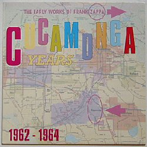

Заппа'zУх!Ой!
русский более или менее регулярный бюллетень для поклонников американского композитора
Frank'а Vincent'а Zappa'ы
Выпуск.20 (25 августа 1999)
Как твоя сардинка?
|
 С чего начать, вернувшись в Паппин дом? Ну, конечно, с ревизии оставленного хозяйства? Что тут у нас в ящичке? А на полочке? Ба! Начало всех начал - Кукамонга, японский компактик "Cucamonga Years - The Early Works of Frank Zappa 1962-1964", а рядом америкашки из Del-Fi со своим вариантом прошлого "Cucamonga! Frank's Wild Years".Сравнить что ли? Взять в правую руку желтый маркер, в левую - голубой, и, ну, марать списки песен. Цвет моря уникальные, цвет пляжа повторяющиеся, уу-уууух, a-go-go, то есть, surfing USA! В горку, с горки, в горку, с горки - красота, просто замечательная радуга из парных и непарных номеров двух альбомов получилась. |
|
Cucamonga Years - The Early Works of Frank Zappa 1962-1964" Music Scene Inc. MSI 10037 (Japan), 1987 |
Cucamonga! Frank's Wild Years Del-Fi Records 71261, 1996 |
|
|
|---|
Отлично, и какой же мировоззренческий вывод может следовать из этой отменной диаграммы достижений народного хозяйства?
Ну, во-первых, если не принимать во внимание разницу в подходах к оцифровке звука, подробно проанализированную, кстати, Пэтом Нэвом, структурообразующая гуща, так сказать, одинакова. Но если, довесок Del-Fi - это не вполне уместный под общим заголовком Frank's Wild Years - Пол Буфф, то тщательный японец заполировал комплект настоящим, безусловным Заппой.
Да, каким!
Grunion Run! Уже только из-за этой вещицы, длинного гитарного соло Фрэнка Заппы 1963 года стоит потратить время на поиск и деньги на покупку этой славной азиатской штучки.
How's your brother?
An' how's your mother?
How's Aunt Fanny?
An' how's your granny?
This is absurd
How's your bird?
-(Excuse me . . .)
How's your bunion?
An' how's your grunion?
Обе Кукамонги.
Baby Ray & The Ferns: How's Your Bird?
Между прочим, знаете кто это легкоатлет? Grunion? А рыбка такая беззубая, сардиноподобная мелюзга. Одна из удивительных достопримечательностей морской фауны южной Калифорнии. Несколько раз в год она приплывает к берегу для свадебных игр, в полнолуние стаи самцов, подваливают с прибоем орошать семенем самок, зарывшихся в приступе стыдливой похотливости в прибрежный песок. Гон - это по-русски называется. А по-английский Grunion Run!
Любопытно, что и с этим примечательным добавлением коллекция ранних сорокопяток ФЗ не становится полной. Помимо записей молодого гения, принадлежащих Del-Fi и Original Sound имеется еще и кое-что в собственности Capitol.
Brian Lord & the Midnighters: The Big Surfer / Not Another One. Capitol Records, 4981.
Подробное описание этой пластиночки да и всего прочего богатства периода доисторического материализма можно найти, кстати, как всегда у Йохана Викберга. Вот только почему-то картинку, которую я ему послал, он взял да и ужал, так что и разглядеть невозможно, кто же автор песни на первой стороне. Вот вам, други, кладу здесь в натуральную величину.
А на прощание, как всегда шуточка.
Обложка, там вверху, с надписью "Cucamonga Years - The Early Works of Frank Zappa 1962-1964" - это вовсе и не одежда нами восхваляемого сидючка c ветки сакуры. Так выглядит наглая, незаконная, то есть натурально контрофактная картофельная, европейская виниловая копия. Vinyl Virus VV LP 020.
За образом же настоящей японки и текстиками песен, пожалуйста, к Патрику.
Искренне Ваш, Владимир Советов
http://www.arf.ru/
| Домой | Заппа'zУх!Ой! | Поиск | Хозяин |
{kind=link}